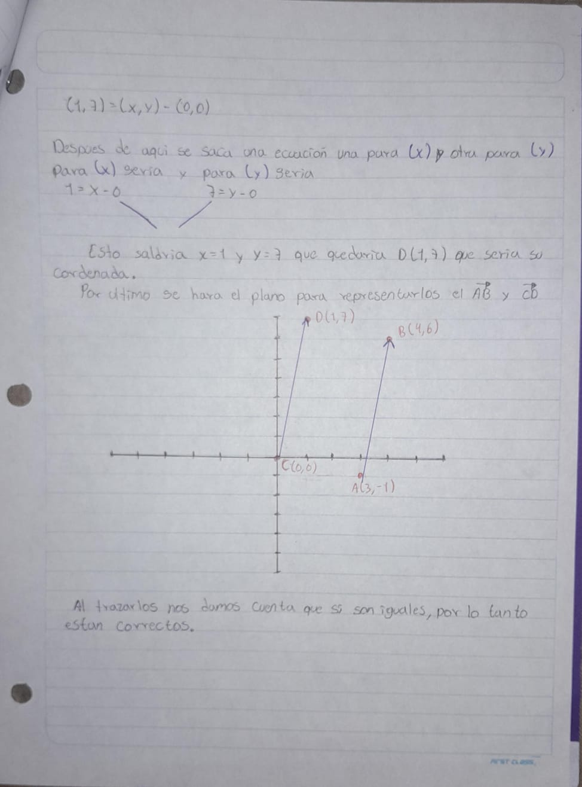

Este trabajo explica cuáles son las magnitudes vectoriales, las característica de las magnitudes vectoriales, los sistemas de coordenadas, lo que es un vector, las características de los vectores, los tipos de vectores, los tipos de sistemas de vectores, la aplicación de los sistemas de vectores, las fórmulas para la resolución de los vectores, los puntos de aplicación de los vectores y como calcularlo, las sumas de vectores, ya sea por el método grafico o por el método analítico, el que son las sumas de vectores, la composición vectorial, los enlaces entre vectores, los tipos de enlaces y sus aplicaciones.
El objetivo de esta investigación es explicar el uso de los sistemas de vectores, sus características y funciones, además de utilizar elementos gráficos para una mejor comprensión del tema, junto con la ayuda de ejemplos y explicaciones detalladas paso por paso.
Las magnitudes vectoriales son aquellas que quedan caracterizadas por una cantidad (intensidad o módulo), una dirección y un sentido. En un espacio euclidiano, de no más de tres dimensiones, un vector se representa mediante un segmento orientado. Una magnitud escalar es aquella que queda completamente determinada con un número y sus correspondientes unidades, y una magnitud vectorial es aquella que, además de un valor numérico y sus unidades (módulo) debemos especificar su dirección y sentido. Magnitudes escalares y vectoriales: Las magnitudes que emplearemos en este curso de Física serán de dos tipos: escalares y vectoriales. Una magnitud escalar es aquella que queda completamente determinada con un número y sus correspondientes unidades, y una magnitud vectorial es aquella que, además de un valor numérico y sus unidades (módulo) debemos especificar su dirección y sentido. La elección de un escalar o un vector para representar una magnitud física depende de la naturaleza de esta; si estamos describiendo la temperatura de una habitación, la densidad de un cuerpo, su masa... necesitaremos representarlas mediante un número. Por el contrario, cuando trabajemos con magnitudes como la fuerza, la velocidad, la aceleración, el campo eléctrico, etc., emplearemos vectores. Un vector en el espacio tridimensional está caracterizado por tres números que se denominan componentes o coordenadas del vector. Las componentes de un vector serán en general diferentes dependiendo del sistema de coordenadas que utilicemos para expresarlas, pero siempre es posible relacionarlas de una manera sistemática.
Son ejemplo de ellas: desplazamiento, velocidad, aceleración, fuerza, aceleración de gravedad, peso, campo magnético, campo eléctrico. Las magnitudes vectoriales pueden representarse gráficamente mediante un segmento de recta dirigido, que posee tres propiedades: magnitud, dirección y sentido, denominado vector.
En general a lo largo de estas páginas emplearemos el sistema de coordenadas cartesianas para especificar las componentes de un vector. El sistema de coordenadas cartesianas está constituido por tres ejes (dos si trabajamos en dos dimensiones) perpendiculares entre sí que se cortan en un punto llamado origen. Las componentes cartesianas de un vector son las proyecciones de dicho vector sobre cada uno de los ejes. Como se observa en la figura anterior están relacionadas con el ángulo que forma el vector con el eje x y con su longitud (módulo).
IMAGEN 2.1 DESCOMPOCICION RECTANGULAR.

ECUACION 3.1 SOLUCION DE LA IMAGEN 2.1.

ECUACION 3.2 DETERMINACION DE COMPONENTES REGTANGULARES.

ECUACION 3.3 DETERMINACION DE LA RESULTANTE.
Los escalares y los vectores son dos tipos de cantidades que se usan en física y matemáticas. Los escalares son cantidades que solo tienen magnitud (o tamaño), mientras que los vectores tienen tanto magnitud como dirección. Explora algunos ejemplos de escalares y vectores que incluyen la distancia, el desplazamiento, la rapidez y la velocidad. Creado por Sal Khan.
Dentro del área de la física, se le conoce como vector a un segmento de recta en el espacio que parte de un punto hacia otro, es decir, que tiene dirección y sentido. Los vectores en física tienen por función expresar las llamadas magnitudes vectoriales.
En computación, un vector representa una lista de números que pueden tomar muchos valores. En matemáticas se define vector como un elemento de un espacio vectorial. Esta noción es más abstracta y para muchos espacios vectoriales no es posible representar sus vectores mediante el módulo y la dirección, en particular los espacios de dimensión infinita sin producto escalar no son representables de ese modo. Los vectores en un espacio euclídeo se pueden representar geométricamente como segmentos de recta.
Mientras en el área de la computación, los vectores son una forma de almacenar datos que permiten contener una serie de valores del mismo tipo, cada uno de los valores contenidos tiene una posición asociada que se usará para accederlos. Está posición o índice será siempre un número entero positivo.
Se denomina magnitudes a los atributos físicos mensurables (medibles) de los objetos o de las interacciones entre ellos, tales como fuerzas, temperatura, longitud, carga eléctrica o muchas otras variables. Dependiendo de ciertas características, las magnitudes pueden ser de dos tipos: escalares y vectoriales.
Las magnitudes escalares son aquellas representables por una escala numérica, en la que cada valor específico acusa un grado mayor o menor de la escala. Por ejemplo: temperatura, longitud.
Las magnitudes vectoriales, en cambio, involucran mucha más información de la simplemente representable en una cifra y requieren, además, de un sentido o dirección específico dentro de un sistema de referencia determinado. Por ejemplo: velocidad, fuerza. Para eso, se impone un vector como representación del sentido único de la magnitud. Todo vector está definido por cuatro propiedades:
Punto de aplicación. El lugar donde “nace” el vector. Esto define el sistema de referencia usado para definir la vector.
Dirección. La orientación con respecto a un eje del sistema de referencia elegido.
Sentido. Hacia qué lado de la recta de acción se dirige el vector.
Módulo. La longitud del vector.
En física, se llama vector a un segmento de recta en el espacio que parte de un punto hacia otro, es decir, que tiene dirección y sentido. Los vectores en física tienen por función expresar las llamadas magnitudes vectoriales.
El término vector proviene del latín vector, vectoris, cuyo significado es ‘el que conduce’, o ‘el que transporta’.
Los vectores se representan gráficamente con una flecha. Asimismo, cuando deben ser expresados en una fórmula, se representan con una letra coronada por una flecha.

IMAGEN 2.2 EJEMPLO DE VECTOR.
Las magnitudes vectoriales son aquellas magnitudes que, además de representarse con un número y una unidad, requieren también ser expresadas en el espacio con una dirección y un sentido, es decir, con un vector.
Esto las distingue de las magnitudes escalares, las cuales solo requieren un número y una unidad. Son ejemplos de magnitudes vectoriales los siguientes:
velocidad; desplazamiento; aceleración; impulso; fuerza; peso; potencia; campo eléctrico; campo magnético; campo gravitatorio; energía térmica; torque; momentum.
Los componentes de los vectores que definen sus características son los siguientes:

IMAGEN 2.3 MODELO DE UN VECTOR.
Módulo o magnitud: se refiere a la longitud o amplitud del vector o segmento de recta.
Dirección: se refiere a la inclinación que posee el vector con respecto a un eje horizontal imaginario, con el cual forma un ángulo.
Sentido: se refiere a la orientación del vector, indicado por la cabeza de la flecha del vector.
Vectores nulos: son aquellos donde origen y extremo coinciden y, por lo tanto, el módulo o magnitud es igual a 0. Por ejemplo:

IMAGEN 2.4 EJEMPLO DE UN VECTOR NULO.
resolución de un vector nulo
Vectores unitarios: son aquellos cuyo módulo es igual a 1. Por ejemplo:

IMAGEN 2.5 EJEMPLO DE UN VECTOR UNITARIO.
resolución de un vector unitario
Vectores fijos: son aquellos que expresan un punto de origen además de un extremo, el cual está determinado en un punto fijo del espacio. Suelen usarse, por ejemplo, para expresar la fuerza aplicada sobre dicho punto. Para representarlos, se dice que el punto de origen es A y el extremo es B. Por ejemplo:

IMAGEN 2.6 EJEMPLO DE UN VECTOR FIJO.
resolución de un vector unitario
Vectores paralelos: están situados en rectas paralelas, pero poseen un mismo sentido o contrario. Por ejemplo:

IMAGEN 2.7 EJEMPLO DE UN VECTOR PARALELO.
resolución de un vector paralelo
Vectores opuestos: se caracterizan por tener la misma dirección y magnitud, pero su sentido es opuesto. Por ejemplo:

IMAGEN 2.8 EJEMPLO DE UN VECTOR OPUESTO.
resolución de un vector opuesto
Vectores concurrentes o angulares: son aquellos cuyas líneas de acción pasan por el mismo punto, es decir, se intersecan. Por ejemplo:

IMAGEN 2.9 EJEMPLO DE UN VECTOR CONCURRENTE O ANGULAR.
resolución de un vector opuesto
Vectores libres: son aquellos vectores cuyo punto de aplicación es indeterminado y, por lo tanto, libre. Por ejemplo:

IMAGEN 2.10 EJEMPLO DE UN VECTOR LIBRE
resolución de un vector libre
Vectores equipolentes o iguales: son aquellos vectores con igual módulo, dirección y sentido. Por ejemplo:

IMAGEN 2.11 EJEMPLO DE UN VECTOR EQUIPOLENTES O IGUALES.
resolución de un vector igual
|  |
Vectores coplanarios: son aquellos que están en un mismo plano. Por ejemplo:

IMAGEN 2.12 EJEMPLO DE UN VECTOR COPLANARIO.
resolución de un vector coplanario.
Vectores colineales: sus líneas de acción se encuentran sobre una misma recta. Por ejemplo:

IMAGEN 2.13 EJEMPLO DE UN VECTOR COLINEAL.
resolución de un vector colineal
Vectores axiales o pseudovectores: son los que están ligados a efectos de giro. La dirección señala el eje de rotación del segmento. Por ejemplo:

IMAGEN 2.14 EJEMPLO DE UN VECTOR AXIAL O PSEUDOVECTOR.
resolución de un vector axial
Los vectores, representados gráficamente, poseen las siguientes características:
Dirección: Definida como la recta sobre la cual se traza el vector, continuada infinitamente en el espacio. Para otra explicación sería: es la medida del ángulo que hace con una línea horizontal.
Una de las fórmulas siguientes puede ser usada para encontrar la dirección de un vector:

donde x es el cambio horizontal y es el cambio vertical
o

donde (x 1, y 1) es el punto inicial y (x 2, y 2) es el punto terminal.
ECUACION 3.4 USADA PARA ENCONTRAR LA DIRECCIÓN DE UN VECTOR.
Ejemplo: Encuentre la dirección del vector

cuyo punto inicial P está en (2, 3) y punto final Q está en (5, 8).
Las coordenadas del punto inicial y del punto terminal están dadas.
Sustitúyalos en la fórmula
Encuentre la tan inversa, luego use una calculadora.

El vector
tiene una dirección de alrededor 59.
El módulo de un vector es la longitud de un segmento orientado en un espacio que está determinado por dos puntos y el orden de estos. En otras palabras, el módulo de un vector es la longitud entre el inicio y el final del vector, es decir, dónde empieza y dónde termina la flecha. Visto de otra forma, podemos decir que el módulo de un vector es lo mismo que la longitud de un vector.

ECUACION 3.5 FORMULA UTILIZADA EN EL MODULO DE UN VECTOR.
IMAGEN 2.15 EJEMPLO DE UN MODULO DE UN VECTOR.
Podemos entender el módulo como la distancia entre dos objetos. La distancia tiene la propiedad de ser siempre positiva. Por ejemplo, de nuestro ordenador a nosotros mismos hay una distancia. Pero esta distancia es la misma si lo miramos desde nosotros mismos hacia nuestro ordenador. Entones será cualquier número real positivo incluyendo el 0.
Fórmula del módulo de un vector de tres dimensiones

ECUACION 3.6 USADA EN LA SOLUCION DE VECTORES TRIDIMENCIONALES.
IMAGEN 2.17 EJEMPLO DE UN VECTOR TRIDIMENCIONAL.
Dado un vector v de tres dimensiones con coordenadas (v1,v2,v3), el módulo sería tal que:
Módulo de un vector de tres dimensiones
La única diferencia entre el cálculo del módulo para un vector de dos dimensiones y el cálculo del módulo de un vector de tres dimensiones es que el tercer término no aparece en la primera ecuación.
Un vector puede extenderse hasta n dimensiones. Entonces, eso quiere decir que su módulo también. Por tanto, podemos calcular y representar un vector de 2 dimensiones.
Representar cualquier figura en un espacio de más de tres dimensiones implica tener un buen programa gráfico. Desde el punto de vista de cálculo, es relativamente fácil calcular el módulo de un vector con 6 coordenadas, por ejemplo.
También es común expresar la fórmula del módulo en las variables de los ejes, por tanto, podemos expresar las ecuaciones anteriores de la forma:
Fórmula del módulo de un vector:
Siendo la primera letra x, seguida de y z.
Propiedades del módulo de un vector
El producto escalar lo encontramos al final de la fórmula, después de la multiplicación del número dos, hay dos vectores multiplicándose. La multiplicación de dos vectores o producto escalar no se soluciona tan solo multiplicando sus módulos, sino que también se tiene en cuenta la proyección de un vector sobre el otro desde el punto de vista geométrico.
Segunda propiedad
El módulo de la suma de dos vectores será siempre menor o igual que la suma individual de sus módulos.
Ejemplo del módulo de un vector
Calcula el módulo de un vector v con coordenadas (3,-4,6).
El primer paso sería escribir el vector dado y la fórmula del módulo.
Sentido: se refiere a la orientación del vector, indicado por la cabeza de la flecha del vector. viene representado por la punta de la flecha que se expresa gráficamente, indicando el lugar hacia el cual se dirige el vector.
Un vector ⃗vv→ parte de un punto AA y termina en un punto BB:
El vector ⃗ww→ que parte del punto BB y termina en el punto AA tiene sentido opuesto:
Ambos vectores unen los mismos puntos, pero en sentidos contrarios. Miden lo mismo y tienen la misma dirección.
Si el vector ⃗vv→ es ⃗v=(v1, v2)v→=(v1,v2), entonces el vector ⃗ww→ es ⃗w=(−v1,−v2)w→=(−v1,−v2). Es decir, ⃗ww→ es el vector opuesto de ⃗vv→:
Punto de Aplicación de un Vector
Todo lo que necesitas saber para entender su importancia y cómo calcularlo.
El punto de aplicación de un vector es el punto donde se aplica una fuerza o una magnitud vectorial.
En otras palabras, es el lugar físico en el que actúa el vector.
El punto de aplicación es crucial para determinar el efecto de una fuerza en un objeto o sistema.
Cuando se trabaja con vectores, es importante tener en cuenta que la dirección y la magnitud de un vector son importantes, pero el punto de aplicación también juega un papel fundamental en el análisis de las fuerzas.
Aunque un vector puede tener la misma dirección y magnitud, si su punto de aplicación es diferente, tendrá un efecto distinto en el objeto o sistema en el que actúa.
El punto de aplicación de un vector es esencial para comprender cómo actúan las fuerzas en un objeto o sistema.
La posición exacta del punto de aplicación puede determinar si una fuerza provoca un movimiento, una rotación o simplemente un cambio en la dirección de un objeto.
Además, el punto de aplicación también es fundamental para el cálculo y la resolución de problemas relacionados con las fuerzas.
Al conocer la posición exacta de donde se aplica una fuerza, se puede determinar cómo afectará al objeto o sistema y cómo interactuará con otras fuerzas presentes.
En el campo de la ingeniería y la física, comprender el punto de aplicación es crucial para el diseño y la construcción de estructuras seguras y eficientes.
Al analizar y predecir cómo las fuerzas actúan sobre una estructura, es posible tomar decisiones informadas sobre el diseño, los materiales y las conexiones, lo que garantiza la integridad y la estabilidad de la construcción.
El cálculo del punto de aplicación de un vector puede variar dependiendo del contexto en el que se utiliza.
Sin embargo, hay algunos métodos generales que se pueden utilizar para determinar el punto de aplicación de una fuerza.
Uno de los métodos más comunes es mediante el uso de coordenadas. Si se conocen las coordenadas del punto de aplicación de un vector, se puede calcular su posición exacta en relación con un sistema de referencia.
Esto se puede hacer utilizando fórmulas matemáticas simples o mediante el uso de software de cálculo vectorial.
Otro método para calcular el punto de aplicación es mediante el uso de diagramas de cuerpo libre.
Estos diagramas representan un objeto o sistema y todas las fuerzas que actúan sobre él.
Al dibujar y analizar estas fuerzas, se puede determinar el punto de aplicación de cada una de ellas.
Es importante recordar que el punto de aplicación puede cambiar si el vector se descompone en sus componentes, o si se suman o restan varios vectores para formar una fuerza resultante.
En estos casos, el punto de aplicación debe calcularse teniendo en cuenta todas las fuerzas involucradas y sus puntos de aplicación individuales.
La suma de vectores consiste en formar una cadena donde el vector resultante engloba a todos los vectores sumados. En otras palabras, se trata de unir vectores juntando la parte delantera de uno con la trasera del otro. Además, cumple con la propiedad conmutativa. Un vector de dimensión (n) es una fila con (n) números reales. Se representa con un segmento que tiene sentido y dirección, y se usa para representar magnitudes físicas como volumen, presión y energía.
•La suma de vectores es conmutativa.
•Se representa gráficamente uniendo vectores extremo a extremo.
•Un vector de dimensión (n) no tiene (n) números reales.
Método poligonal o gráfico:
Éste es el método gráfico más utilizado para realizar operaciones con vectores, debido a que se pueden sumar o restar dos o más vectores a la vez.
El método consiste en colocar en secuencia los vectores manteniendo su magnitud, a escala, dirección y sentido; es decir, se coloca un vector a partir de la punta flecha del anterior. El vector resultante esta dado por el segmento de recta que une el origen o la cola del primer vector y la punta flecha del último vector.
Como su nombre lo indica, son métodos en los que para determinar el vector suma o resultante, se debe trazar gráficas de los vectores componentes, a escala y respetando sus direcciones. Tanto la magnitud como la dirección de las resultantes determinan por medición directa en la gráfica. Para sumar vectores por el método del polígono se colocan los vectores consecutivamente respetando el origen y sus sentidos, el vector resultante se obtiene uniendo el origen del primer vector con el extremo final del último vector. El método del paralelogramo es útil para sumar dos vectores concurrentes y basta con trazar líneas auxiliares paralelas a los vectores originales, para formar un paralelogramo: cada vector original se dibuja a escala, formando lados adyacentes partir de las puntas de flechas que limitan a los vectores originales trazando líneas paralelas hasta que se interceptan, la resultante será la diagonal que une el punto de concurrencia de los vectores originales hasta el punto de intersección de las líneas auxiliares, interpretando la longitud con la escala de medida utilizada.
Es importante destacar que, al sumar vectores, estos deben representar una misma magnitud física, por lo tanto, la suma vectorial es una operación homogénea. Esto significa que podemos sumar una fuerza con otra, pero no una fuerza con un desplazamiento, ya que el resultado carece de sentido.
Se dispone de varios métodos para encontrar el vector resultante: gráficos y analíticos. Para encontrar sumas vectoriales con métodos gráficos se parte de una representación sencilla para un vector

IMAGEN 2.18 EJEMPLO DE SUMAS DE VECTORES.
Vamos a sumar dos vectores, el a y el b.
Fíjate que desde el final del vector a trazamos una paralela de igual tamaño que el vector b.
El inicio de a y el final de la paralela trazada será el vector suma de las dos iniciales.
También podemos hacerlo desde el final de b trazando una paralela del vector a.
El resultado será el mismo de una u otra forma. El vector rojo es la suma.

IMAGEN 2.19 SUMA DE VECTORES CON SU PROSEDIMIENTO.
Para sumar 3 vectores (o la cantidad que sea) solo hay que poner uno detrás del otro y unir el principio del primero con el final del último.
Ejemplo: Sean los vectores:


IMAGEN 2.20 EJEMPLOS DE VECTORES.
Resolviendo por el método del polígono, la figura resultante es:

ECUACION 3.7 METODO DELPOLÍGONO.
IMAGEN 2.21 EJEMPLO DEL METODO DEL POLÍGONO.
Si se utilizan los instrumentos de medición prácticos, se obtiene que:

ECUACION 3.8 INSTRUMIENTOS DE MEDICION PRACTICOS.
Este método permite sumar dos vectores de manera sencilla. Consiste en colocar los dos vectores, con su magnitud a escala, dirección y sentido originales, en el origen, de manera que los dos vectores inicien en el mismo punto.
Los dos vectores forman dos lados adyacentes del paralelogramo. Los otros lados se construyen trazando líneas paralelas a los vectores opuestos de igual longitud.
El vector suma resultante se representa a escala mediante un segmento de recta dado por la diagonal del paralelogramo, partiendo del origen en el que se unen los vectores hasta la intersección de las paralelas trazadas.
Si la operación se hace gráficamente con el debido cuidado, sólo bastaría medir con una regla el tamaño del vector de color negro utilizando la misma escala que utilizó para dibujar los vectores sumando (el rojo y el azul). Esa sería la magnitud de la suma. La dirección se podría averiguar midiendo con un transportador el ángulo que forma con una línea horizontal.
En Física es común encontrarse una suma de cantidades vectoriales, y aunque podemos recurrir a diversos métodos como el del triángulo, del polígono o el paralelogramo, es importante tener en cuenta que la forma analítica nos conducirá a un resultado más exacto.
En el método analítico es posible aplicar el teorema de Pitágoras solamente si los dos vectores forman un ángulo de 90°, de otra forma tendremos que aplicar la Ley de Cosenos, y si se desea calcular el ángulo de la resultante es posible también recurrir a la Ley de Senos.

IMAGEN 2.22 EJEMPLO DE UTILIZACION DE LA LEY DE COSENOS.
Para realizar la suma analítica, basta con trazar la resultante a partir de sus proyecciones como vectores deslizantes, de tal manera que:

IMAGEN 2.23 TROAZOS DE UNA SUMA ANALITICA.
Realizar estos movimientos nos favorece mucho la forma de solución de la resultante, por lo que, si deseamos sumar dos vectores, será mucho más fácil.
El método analítico, no requiere la utilización de la forma gráfica de los vectores. Se puede llevar a cabo sin realizar un solo dibujo. En el ejemplo que se analiza en los ejercicios resueltos, se podrá observar porque no es necesario, Para llevar a cabo el procedimiento del método analítico, debemos de considerar los siguientes puntos.
• Obtener las componentes rectangulares de todos los vectores que se van a sumar.
• Sumar todas las componentes en x de todos los vectores para obtener la componente en x del vector resultante.
• Sumar todas las componentes en y de todos los vectores para obtener la componente en y del vector resultante.
• Obtener la magnitud y el ángulo del vector resultante a partir de sus componentes rectangulares.
Para poder hacer la suma de vectores, primero tenemos que realizar la descomposición vectorial de cada vector.
Para realizar la descomposición vectorial utilizaremos herramientas trigonométricas.

IMAGEN 2.24 DESCOMPOCICION VECTORIAL.
Para obtener vx, Cosθ =h/C.A, cos30°=5/Vx, Despejando Vx, Vx=5cos30, Vx=4.33, Para obtener Vy, Senθ =h/C.O, sen30°=5/Vy, Despejando Vx, Vy=5sen30, Vx=2.5,
Ahora paso a paso la suma en forma analítica.
Primer paso:
Descomposición Vectorial en sus componentes x, y,

Imagen 2.25 DESCOMPOCICION VECTORIA EJEMPLO 2.
Componente x, Ax =40cos20, Ax =37.58N, Bx =−45cos45, Bx =−31.81N, Componente x, Ay=40sen20, Ay=13.68N, By =45cos45, By =31.81N,
Segundo paso:
Sumatoria de las componentes en X y Y. ∑x, ∑x = ax+bx, ∑x =37.58N−31.81N, ∑x=5.77N, ∑y, ∑y = ay+by, ∑y =13.68N+31.81N, ∑y =45.49N,
Tercer paso:
Obtención del vector resultante R
R= raíz de= (∑x) ²+(∑y) ², R= raíz de (5.77) ²+(45.49) ², R=45.85N
Cuarto paso:
Obtención de la dirección (ángulo) del vector resultante:
θ=tan−1(∑x/ ∑y), θ=tan−1(5.77/45.49), θ=82.77°
Es un conjunto de vectores que se utilizan para representar cantidades físicas o matemáticas en un espacio multidimensional. Los vectores se pueden combinar mediante operaciones como suma y producto escalar para resolver problemas y modelar fenómenos.
1. Vector: Magnitud y dirección en un espacio.
2. Base: Conjunto de vectores que generan un espacio vectorial.
3. Dimensión: Número de vectores en una base.
1. Sistema de coordenadas cartesianas: Utiliza vectores i, j y k para representar direcciones en el espacio tridimensional.
2. Sistema de coordenadas polares: Utiliza vectores para representar magnitud y dirección en un plano.
3. Sistema de coordenadas esféricas: Utiliza vectores para representar direcciones en el espacio tridimensional.
4. Sistema de vectores ortonormales: Conjunto de vectores mutuamente perpendiculares y de magnitud unitaria
1. Suma y resta de vectores.
2. Producto escalar (punto) y vectorial (cruz).
3. Magnitud y dirección de un vector.
4. Ángulo entre vectores.
Aplicaciones de los sistemas de vectores:
1. Física e ingeniería: movimiento, fuerzas, momentos, energía.
2. Matemáticas: álgebra lineal, cálculo, geometría.
3. Computación gráfica: representación de objetos y transformaciones.
4. Análisis de datos: representación de variables.
Los sistemas de vectores y sus enlaces son fundamentales en matemáticas y física. Aquí te presento algunos conceptos clave:
1. Suma: Combinación de vectores.
2. Producto escalar (punto): Magnitud del ángulo entre vectores.
3. Producto vectorial (cruz): Vector perpendicular a dos vectores.
4. Magnitud: Longitud de un vector.
5. Dirección: Orientación de un vector.
1. Ortogonalidad: Vectores perpendiculares.
2. Paralelismo: Vectores con la misma dirección.
3. Independencia lineal: Vectores que no se pueden combinar para formar el vector cero.
1. Física: Movimiento, fuerzas, momentos, energía.
2. Matemáticas: Álgebra lineal, cálculo, geometría.
3. Computación gráfica: Representación de objetos y transformaciones.
4. Análisis de datos: Representación de variables.
Estefanía Coluccio Leskow, (30 de enero de 2017-12 de junio de 2024), Magnitudes vectoriales y escalares, enciclopedia de ejemplos
https://www.ejemplos.co/20-ejemplos-de-magnitudes-vectoriales-y-escalares/#ixzz8jkRjhJLP
Introducción a vectores y escalares; Distancia, desplazamiento y sistemas de coordenadas, Khan Academy.
https://es.khanacademy.org/science/ap-physics-1/ap-one-dimensional-motion/ap-physics-foundations/v/introduction-to-vectors-and scalars#:~: text=Los%20escalares%20y%20los%20vectores,tienen%20tanto%20magnitud%20como%20direcci%C3%B3n.
Jaime Jesús Ortega Ibarra (miércoles ene 13 20:14:01 2020), Vectores, MATIC (Instituto de Geofísica, UNAM)
http://gmc.geofisica.unam.mx/papime2020/index.php/articulos/19vectores#:~:text=%C2%BFQu%C3%A9%20es%20un%20vector%3F,expresar%20las%20llamadas% 20magnitudes%20vectoriales.
Teresa Martín Blas y Ana Serrano Fernández, Conceptos básicos, Magnitudes escalares y vectoriales
https://www2.montes.upm.es/dptos/digfa/cfisica/magnitudes/magnitudes.htm#:~:text=Una%20magnitud%20escalar%20es%20aquella,especificar%20su% 20direcci%C3%B3n%20y%20sentido.
Editorial Etecé (31 de agosto de 2020),Enciclopedia Concepto, Vector. https://concepto.de/vector/#ixzz8jkLK20Xb
Carlos Julián, fisimat, Suma de Vectores - Método Analítico https://www.fisimat.com.mx/suma-de-vectores/
rmelgoza@fisymat.com, fisimat, Suma de vectores método analítico https://fisymat.com/fisica/suma-de-vectores-metodo-analitico/
Contenido
INDICE DE IMÁGENES
RESUMEN
OBJETIVO
MAGNITUDES VECTORIALES
¿Qué son las magnitudes vectoriales?
¿Cuáles son las magnitudes vectoriales?
Sistemas de coordenadas
VECTORES
¿Qué es un vector?
Magnitudes vectoriales
Características de los vectores
Tipos de vectores
Los vectores, representados gráficamente, poseen las siguientes características
FORMULAS EN VECTORES
Propiedades del módulo de un vector
¿Qué es el punto de aplicación de un vector?
SUMA DE VECTORES: METODO GRÁFICO Y ANALÌTICO
¿Qué es la suma de los vectores?
Puntos clave
METODO GRÁFICO
Método poligonal o gráfico
Método del paralelogramo
Método analítico
Descomposición vectorial
sistemas de vectores
Tipos de sistemas de vectores
Aplicaciones de los sistemas de vectores
Enlaces entre vectores
Tipos de enlaces
Aplicaciones
BIBLIOGRAFIAS